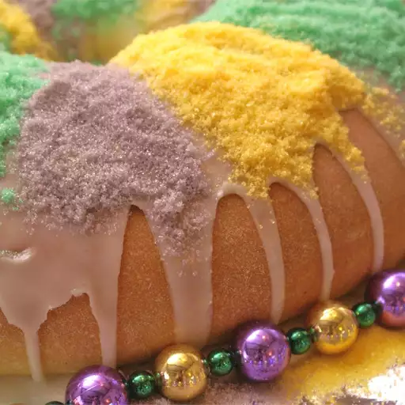

Home
King Cake

Description
This a sweet bread that is made during Mardi Gras
in New Orleans.
It has a cream cheese filling and a simple glaze.
A tiny plastic baby baked into the bread and will bring
good luck to whoever finds it.
Ingredients
- 2 (.25 ounce) packages active dry yeast
- ½ cup white sugar
- 1 cup warm milk (110 degrees F/45 degrees C)
- ½ cup butter, melted
- 5 egg yolks
- 4 cups all-purpose flour
- 2 teaspoons salt
- 1 teaspoon ground nutmeg
- 1 teaspoon grated lemon zest
- 1 (8 ounce) package cream cheese
- ½ cup confectioners' sugar
- 2 cups confectioners' sugar
- ¼ cup lemon juice
- 2 tablespoons milk
- 1 tablespoon multicolored candy sprinkles
Steps
-
In a large bowl, dissolve yeast and white sugar in warm milk.
Let stand until creamy, about 10 minutes.
-
Stir the egg yolks and melted butter into the milk mixture.
In a separate bowl, combine the flour, salt, nutmeg and lemon zest.
Beat the flour mixture into the milk/egg mixture 1 cup at a time.
When the dough has pulled together, turn it out onto a lightly
floured surface and knead until smooth and supple, about 8 minutes.
Lightly oil a large bowl, place the dough in the bowl and turn to
coat with oil. Cover with a damp cloth and let rise in a warm place
until doubled in volume, about 2 hours.
-
In a small bowl, combine the cream cheese and 1/2 cup confectioners'
sugar. Mix well. In another small bowl, combine the remaining 2 cups
confectioners' sugar, lemon juice and 2 tablespoons milk.
Mix well and set aside.
-
Turn the dough out onto a floured surface. Roll the dough out into a
6x30 inch rectangle. Spread the cream cheese filling across the center
of the dough. Bring the two long edges together and seal completely.
Using your hands shape the dough into a long cylinder and place on a
greased baking sheet, seam-side down. Shape the dough into a ring press
the baby into the ring from the bottom so that it is completely hidden
by the dough. Place a well-greased 2 pound metal coffee can the center
of the ring to maintain the shape during baking. Cover the ring with a
towel and place in a warm place to rise until doubled in size, about 45
minutes. Meanwhile, preheat oven to 350 degrees F (175 degrees C).
-
Bake in preheated oven until golden brown, about 30 minutes.
Remove the coffee can and allow the bread to cool. Drizzle
cooled cake with lemon/sugar glaze and decorate with candy sprinkles.